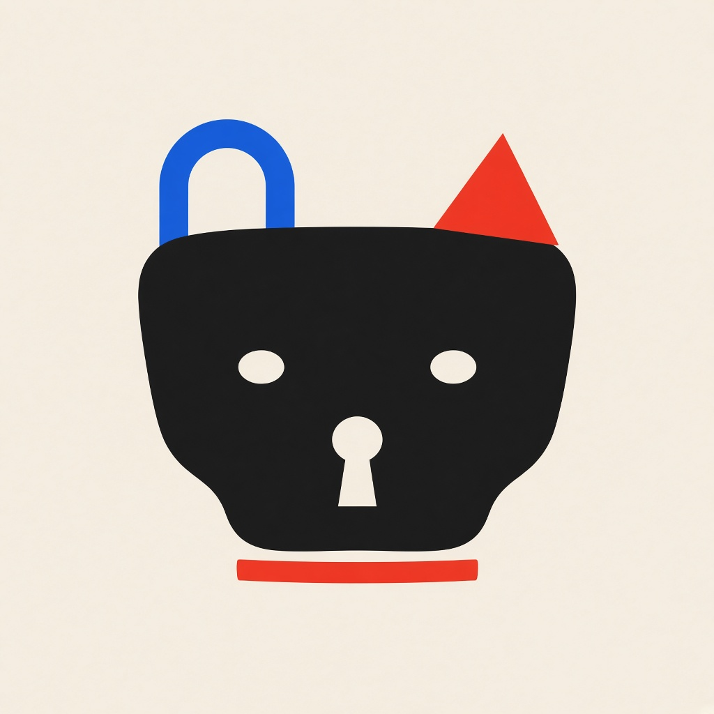

SKILLOCK
Hana
公开技能按启动 token 排名。数字越大，装进去越占上下文。
npx skills add quantz8a/skillock -g -y界面设计
- 1
正文 10,047 · 星 99,453 · spec-dir 1, body-budget 1
261启动 - 2
正文 3,624 · 星 137,673 · 通过
174启动 - 3
正文 2,971 · 星 83,318 · 通过
161启动 - 4
正文 4,146 · 星 137,673 · 通过
136启动 - 5
正文 4,060 · 星 284,243 · 通过
131启动 - 6
正文 2,671 · 星 137,673 · 通过
130启动 - 7
正文 621 · 星 284,243 · 通过
118启动 - 8
正文 2,440 · 星 182,290 · 通过
58启动
省 token
- 1
正文 1,191 · 星 113,705 · 通过
60启动 - 2
正文 808 · 星 168,257 · 通过
39启动
记忆
- 1
正文 681 · 星 101,833 · 通过
78启动 - 2
正文 1,433 · 星 101,833 · 通过
51启动
规划
- 1
正文 2,636 · 星 302,207 · 通过
61启动 - 2
正文 5,372 · 星 302,207 · body-budget 1
50启动 - 3
正文 2,697 · 星 302,207 · 通过
26启动
审查
- 1
正文 1,647 · 星 297,691 · 通过
115启动 - 2
正文 1,577 · 星 302,207 · 通过
69启动 - 3
正文 749 · 星 302,207 · 通过
35启动
测试
- 1
正文 914 · 星 182,290 · 通过
58启动 - 2
正文 918 · 星 297,691 · 通过
40启动 - 3
正文 2,553 · 星 302,207 · 通过
26启动
调试
- 1
正文 2,271 · 星 297,691 · 通过
44启动 - 2
正文 2,484 · 星 302,207 · 通过
29启动
研究
- 1
正文 1,493 · 星 284,243 · 通过
110启动 - 2
正文 142 · 星 297,691 · 通过
67启动
文档
- 1
正文 2,033 · 星 182,290 · 通过
254启动 - 2
正文 1,606 · 星 182,290 · 通过
227启动 - 3
正文 5,377 · 星 182,290 · body-budget 1
201启动
安全
- 1
正文 2,688 · 星 284,243 · 通过
104启动